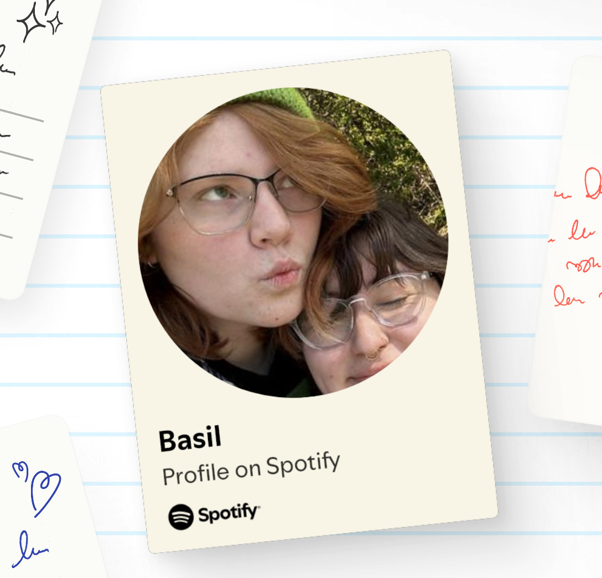

Welcome to the Music Page
Here you can find my favorite songs and playlists!
When in need of new playlists check me out!
Alex G Albums- 4/24/25
Hey everyone! I just wanted to share my favorite Alex G albums with you all. He is an amazing artist and his music has been a huge inspiration for me.
TOP 3:
1. Trick
I KNOW I KNOW!!! I know its a basic pick but this album is a masterpiece. Theres a reason why this is his most famous album. Half the songs on this album make me ILL (in a good way).Sarah and Advice singlehandedly got me through highschool.
2. Race
For any IRLS this pick shouldnt be surprising in the slightest. With classics like TV, Gnaw, and of course Things to do, its SUCH a good album. As an enjoyer of having my emotions absolutely eviscerated by the music I listen to, ITS SOOO PEAK!
3. Rules
This album is a natural pick for top 3 as it was the first album I listened to by Alex G. It has straight fire like Mis and Come Back. The production on the songs is so artsy and unpolished in the best way and the lyrics are TOO GOOD.
Romanian Folk- 4/11/25
So I'm taking a world music class this semester and I've been learning a lot about Romanian folk.
I know it sounds different but its actually really interesting. The music is so different from what I'm used to and it's been such a great experience to learn about the culture through the music.
I highly recommend checking out some Romanian folk music if you're looking for something new to listen to!
My favorite romanian folk musician right now is Toni Iordache who was a legend on the Cimbalom